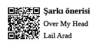
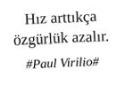

Gerekli tüm altyapı beden tarafından hazırlandıktan sonra beyaz yakalı profesyonel ruh gecikmeli olarak kart basar sistemin okuyucularına. Gelir gelmez deftere ya da mini iPad’e odaklanır.
Pazar gecesinden beri kasmış olduğu bünyesini, içinde bulunduğu sanal beden sayesinde gevşetmeye başlar. Ofis dışında kendisi olmak zorundayken, yani kendi farklı ve özel karakterine can vermek için emek harcaması gerekirken, profesyonel ortamda kendine seçmiş olduğu kimliklerden birini alır ve üzerine giyer. Bu terslik her zaman düşülen bir hatadır, esasen sanal gerçeklik içindeki hayat belirli kalıplara ve hazır kimliklere bağlı olduğundan sadece içlerinden birini seçmek ve rolü iyi oynamak yeterlidir. Oysa beyaz yakanın altındaki gerçeklik ve gerçek kimlik bir benzerini kabul etmeyecek derecede emek ve özen ister. Sanal gerçekliğin rolleri ve görev tanımları bellidir, saygı görmek için kendinizi o rolün içine salıvermeden önce bazı şeyleri dışarda bırakmak kaydıyla...
İşte o an, sanal bedenin, ruhu gerçeklikten kopardığı, güdümüne aldığı ve acılarından arındırdığı andır.
Pazartesi sendromunun özümsenme sürecini tamamlamış bünyeler “to-do-list” yapmaya hazırdır.
Konu “to-do-list” olduğunda kimse elini hafif alıştırmaz. Önemli olan yazmak, görmek ve yazılanın üzerini renkli kalemle, kalın çizgilerle çizme ihtimalidir.
Bir kere hazırlandığı zaman bağımlılık yapar, bünyeden çıkması için 40 gün 40 gece herhangi bir şekilde “to-do-list” hazırlamamak gerekir. Bünyeden bünyeye farklılık gösterebilmekle birlikte aynı ceketin laciverti babından örnek “to-do-list” maddeleri şöyledir.
Haftalık toplantı takvimini organize et (Hobbitler, Elfler, Cüceler, İnsanlar ve diğer tüm Orta Dünya sakinleri ile düzenli statü toplantıları).
X raporunu T zamanına kadar yetiştir (Alcatraz’da 1963’te kaybolan 302 kişinin 2012 statü raporu).
Hilmi Bey’in mail’ine cevap yaz (Paralel evrene daktilo ile yazılan mektuplar).
Mübeccel Hanım’ın toplantı öncesi istediği dokümanı organize et (Dharma Oryantasyon Dokümanı).
Hedeflerini belirle, sisteme gir (Frodo Baggins ve Yüzük Taşıyıcılığı).
Katılacağım eğitimin organizasyonu için departman asistanına mail at.
2018 bütçesini A, B, C, D, E, E1, E2, E3 versiyonları ile hazırla (Plan, Program ve Vizyon Profesyoneli).
Bugün toplantı yapacağın müşteri hakkında önceden araştırma yap (Hazırlık Profesyoneli).
Projenin kick-off toplantısı öncesinde kuaför organizasyonunu yap (Kuaför Profesyoneli).
Hamit ile kahve / yemek organizasyonu (Network Profesyoneli).
Pakize’nin ilgi alanlarına ve kişisel gelişimine katma değer sağlayacak linkleri derle ve bir gün ara ile gönder (Network Profesyoneli).
Motorlu taşıt vergisini, kredi kartı ekstresini, su faturasını yatır (Takip Profesyoneli).
Ofisteki çay servisi yapan Emine Abla’nın halini hatırını sor. Etkin iletişim mesajı ver (CEO olacak Profesyonel).
Toplantılarda sunum yapan insanı challenge edecek sorular sor (Farklı Düşünen Profesyonel).
Cumartesi günü mutlaka bir sergiyi ziyaret et ve bunu Hamiyetler ile çıkacağın yemekte gündeme getir (Çok yönlü, işten öte nitelikli hayat sahibi bir profesyonel).
Sanat tarihi üzerine bir kitap sipariş et (Çok yönlü, işten öte nitelikli hayat sahibi profesyonel).
Pazar günü havalı bir mekânda kahvaltı et ve Foursquare, Foodspotting ve Facebook Places gibi platformlarda ilgili görsellerle check-in olmayı unutma. Yediğini içtiğini Instagram’a koy ki cümle âlemin çükü şişsin (Brunch ve Instagram Profesyonelleri).
Bu hafta yapılacak pazarlama konferansına katıl. Foursquare ve Facebook Places’te check-in ol. Etkinlik hashtag’inden aparttığın tweet’lerden etkinlik özeti çıkarıp şirketteki çalışma arkadaşlarına ve yöneticilerine gönder (Sürekli kendini ve bizleri de geliştiren Konferans Profesyoneli).
Her sabah iki adet yumurta haşla (Sağlıklı Beslenen Profesyonel).
Haftada üç gün spora git (Sağlıklı Yaşayan Spor Profesyoneli).
Necla’nın çok güzel giyindiğini pazartesi, çarşamba ve cuma günleri farklı saatlerde hatırlat. Durup durup söyleme, yanlış anlaşılma, rezil olma (Nezaket ve Network Profesyoneli).
J.J. Abrams’ın yeni dizisi çıkmış. Herkes üzerine konuşmaya başlamadan, piyasa olmadan izle (Fikir Lideri Profesyoneli).
Cumartesi günü piyasadaki bütün dergileri al ve hepsini yüzeysel olarak incele (Haberdar Profesyonel).
10 Adımda Tarih, Pazarlama, Finans, Sosyal Medya, Fotoğrafçılık, Psikoloji, Felsefe, Edebiyat, Pilates, Yoga, Yat Kaptanlığı, Lehimcilik, Tornacılık, New York, Paris, London kitaplarını planlı programlı olarak satın almaya başla (10 Adımda Hayat Profesyoneli).
Ayda bir kere metroya, fünikülere, vapura binerek halkın arasında yer al, davranışları gözlemle (Halkın içinde bir halk profesyoneli).
“To-do-listler”, kâğıt üzerinde, zihnimizde olduğundan çok daha az yer tutar. Normal şartlar altında, insan zihninin karmaşık süreçlerinden genel olarak bir abartma hissi “to-do-list travması” yaratır. Ancak düzenli olarak kâğıda dökülen ve kâğıt üzerinden takip edilen iş kalemleri daha az acı verir, mücadele edilebilir hal alır.
“To-do-list”i zamana karşı tamamlamak hayatın en önemli amacı ve önceliği haline gelebilir.
“To-do-list” maddelerinin üzerini çizmenin, insanda sanal bir haz duygusuna yol açan sanal bir oksijen solunumu olduğu söylenebilir.
Böyle bir şeye hâlâ solunum denilebilir mi? Soluduğumuz şey gerçekten hava mı?
Bilinmiyor...
Ama bilinen tek şey...
Hız ile olan sanal mücadelemizde nefessiz kaldığımız...
